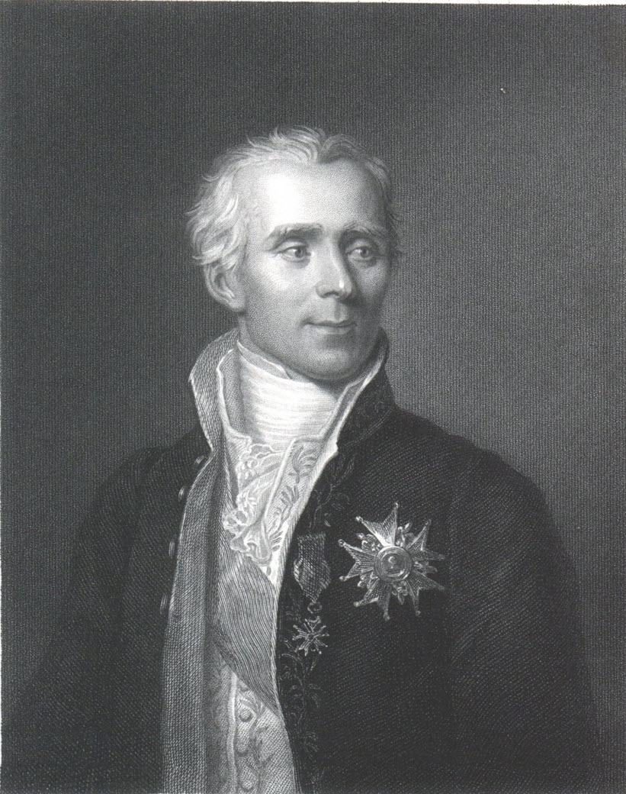
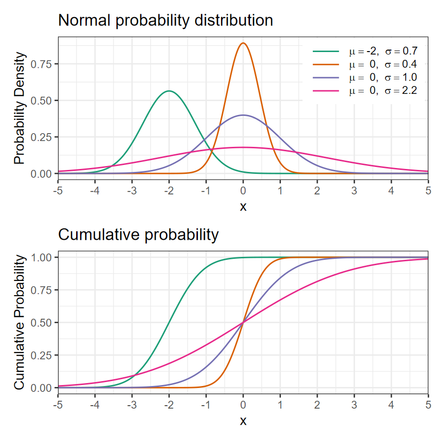
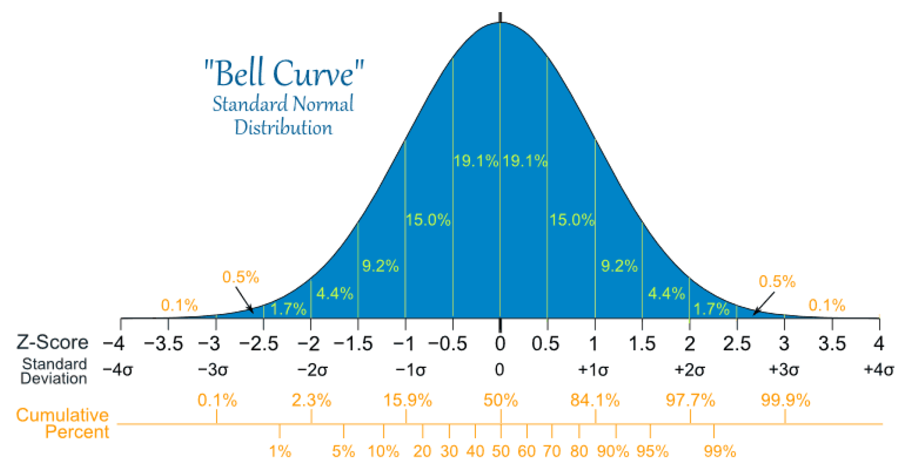
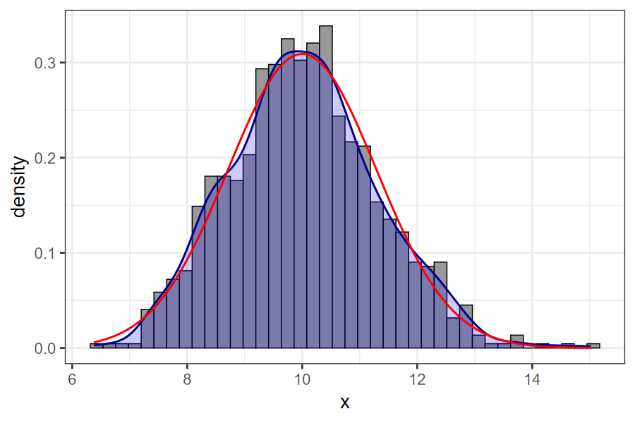

The Normal Distribution
EES 4891/5891
Probability & Statistics for Geosciences
Jonathan Gilligan
Class #10: Thursday, February 06 2025
Learning Goals
Learning Goals
- Understand the basic properties of the normal distribution
- Understand the central limit theorem
- Why do measurements of variables with non-normal distributions lead us to the normal distribution?
- How can we use R to explore the central limit theorem?
- What does this mean for estimating the true value of a variable from uncertain measurements?
- Know two other limit theorems:
- Binomial to Poisson
- Poisson to Normal
Historical Background
Carl Friedrich Gauss (1777–1855)
- Mathematician, astronomer, geographer, physicist
- 1823: Theory of errors
-
If you have several approximate measurements \(m_1\), \(m_2\), …, \(m_n\) of a quantity \(v\),
What is the best estimate of the true value of \(v\)?
-
The arithmetic mean
\[ v_{\text{est}} = \frac{1}{n} \sum_{i = 1}^n m_i \]
-
But this only works if the errors in \(m_i\) are normally distributed.
\[ \mathcal{P}(m_i = x) = \frac{1}{\sqrt{2 \pi \sigma^2}} \: e^{-\,\frac{(x - v)^2}{2\sigma^2}} \]
-

Portrait by Christian Albrecht Jensen, 1840. Public domain.
Pierre-Simon Laplace (1749–1827)
- Discovered the Central Limit Theorem (1810)
- Method of Least Squares
- Find the best estimate of a quantity \(v\) based on a number of measurements \(m_i\) with errors
-
The best estimate minimizes the sum of the squares of the differences between the estimate and the measurements.
\[ v_{\text{est}} \: \text{minimizes} \: \sum_i (v_{\text{est}} - m_i)^2 \]
-
- History
- Originated with Legendre (1805)
- Developed by Gauss (1809)
- Fully developed by Laplace (1810–11) using the Central Limit Theorem
- Find the best estimate of a quantity \(v\) based on a number of measurements \(m_i\) with errors

Portrait by James Posselwhite. Public domain
The Normal Distribution
The Normal Distribution
-
Normal or Gaussian distribution
\[ \phi(x) = \frac{1}{\sqrt{2 \pi \sigma^2}} \: e^{- \, \frac{(x - \mu)^2}{2\sigma^2}} \]
-
Cumulative probability distribution
\[ \Phi(x) = \frac{1}{\sqrt{2 \pi \sigma^2}} \int_{-\infty}^x e^{-\,\frac{(x - \mu)^2}{2\sigma^2}} \]
-
R functions:
- Probability distribution:
dnorm(x, mu, sigma) - Cumulative probability:
pnorm(x, mu, sigma)
- Probability distribution:

The Normal Distribution

Cumulative Probabilities
- Between \(-\sigma\) and \(\sigma\): 68.3%
- Roughly \(1/3\) of measurements will be outside \(\pm 1 \sigma\)
- Between \(-2 \sigma\) and \(2 \sigma\): 95.4%
- Roughly 5% of measurements will be outside \(\pm 2 \sigma\)
- Between \(-3 \sigma\) and \(3 \sigma\): 99.7%
- Roughly 0.3% of measurements will be outside \(\pm 3 \sigma\)
Standardizing Data
Standardizing Data
- Consider \(X = x_1, x_2, \ldots,
x_N\)
- Standardized data: \(X_{\text{std}} =
\frac{X - \text{mean}(X)}{\text{sd}(X)}\)
- If \(X\) is described by a
normal distribution (\(X \sim \mathcal{N}(\mu,
\sigma)\)),
- \(X_{\text{std}} ~ \mathcal{N}(0, 1)\)
- If \(X\) is described by a
normal distribution (\(X \sim \mathcal{N}(\mu,
\sigma)\)),
- Standardized data: \(X_{\text{std}} =
\frac{X - \text{mean}(X)}{\text{sd}(X)}\)
- The standard normal distribution is a normal distribution with \(\mu = 0\) and \(\sigma = 1\).
Moments of the Normal Distribution
- If \(X \sim \mathcal{N}(\mu, \sigma)\)
- First moment: mean \(E(X) = \mu\)
- Second moment: variance \(E((X - \mu)^2) = \sigma^2\)
- Third moment:
- \(E((X - \mu)^3) = 0\)
- \(\mathcal{N}\) is unimodal (one peak) and symmetric, so the mean and median are the same and it has no skewness.
- Fourth moment: \(E((X - \mu)^4) =
3\sigma^4\)
-
kurtosis, measures how sharply peaked a distribution is:
\[
\text{kurtosis} = \frac{E[(X - \mu)^4]}{(E[(X - \mu)^2])^2} =
\frac{E[(X - \mu)^4]}{\sigma^4}
\]
- The normal distribution has kurtosis of 3 and we define excess kurtosis as \[ \text{kurtosis} - 3 = \frac{E[(X - \mu)^4]}{\sigma^4} - 3 \]
- Positive excess kurtosis: leptokurtic, more sharply peaked than a normal distribution
- Negative excess kurtosis: platykurtic, flatter peak than normal
- You don’t need to memorize these
-
kurtosis, measures how sharply peaked a distribution is:
\[
\text{kurtosis} = \frac{E[(X - \mu)^4]}{(E[(X - \mu)^2])^2} =
\frac{E[(X - \mu)^4]}{\sigma^4}
\]
Stability of the Normal Distribution
- Scaling, adding, and subtracting normal distributions produces more
normal distributions.
- If \(X \sim \mathcal{N}(\mu_x,
\sigma_x)\) and \(Y \sim
\mathcal{N}(\mu_y, \sigma_y)\), then
- \(a X + b \sim \mathcal{N}(a \mu_x + b, a \sigma_x)\)
- \(X + Y \sim \mathcal{N}(\mu_x + \mu_y, \sqrt{\sigma_x^2 + \sigma_y^2})\)
- \(X - Y \sim \mathcal{N}(\mu_x - \mu_y, \sqrt{\sigma_x^2 + \sigma_y^2})\)
- If \(X \sim \mathcal{N}(\mu_x,
\sigma_x)\) and \(Y \sim
\mathcal{N}(\mu_y, \sigma_y)\), then
Central Limit Theorem
Central Limit Theorem
- Consider a set of \(N\) independent
and identically distributed random variables \(X_1, X_2, \ldots, X_N\), with identical
mean \(\mu\) and variance \(\sigma^2\).
- The \(X\)s are not necessarily normally distributed.
- Central Limit Theorem: \[ \overline{X} = \frac{1}{N} \sum_{i = 1}^N X_i \] As \(N\) gets larger, the distribution of \(\overline{X}\) converges to a normal distribution \[ \overline{X} \sim \mathcal{N}\left(\mu, \frac{\sigma}{\sqrt{N}}\right) \]
- This applies to any distribution of \(X_i\) that has a finite mean \(\mu\) and variance \(\sigma^2\)
- The standard deviation of \(\overline{X}\) is \(\sigma / \sqrt{N}\), so more measurements means less uncertainty.
- Usually 30 measurements is more than sufficient to guarantee that the average is normally distributed.
Explore Normal Distributions in R
Set Things Up
-
In RStudio, type the following in the console:
-
We want to figure out how the average of \(N\) variables is distributed.
-
To figure out a distribution, we need to repeat taking the average of \(N\) variables many times.
We’re going to repeat the samples 1000 times, and refer to these repetitions as “replicates”.
-
-
Create 1000 replicates, each of which contains \(N\) samples from a distribution.
-
mapa function for each value in a list or sequence, and returns a list of results.-
\(x)tells R that what follows is an anonymous function, wherexis the name of the argument.
## [[1]] ## [1] 1 1 1 ## ## [[2]] ## [1] 2 4 8 ## ## [[3]] ## [1] 3 9 27 ## ## [[4]] ## [1] 4 16 64 -
-
Working with the Samples
-
Pick up where we left off…
-
xis a list of 1000 replicates, each a vector of 30 samples from the normal distribution.
-
-
Average across each of the 1000 replicates:
-
x_baris a list of 1000 numbers, each of which is the mean of the 30 samples in that replicate - We could also say
x_bar <- map(x, mean).-
mapcan take an anonymous function, or the name of a function with a single argument. - We used an anonymous function for
rnormto provide argumentsN,mu, andsigma.
-
-
- We want to calculate the mean and standard deviation of the 1000
replicates.
-
We can’t run
mean()orsd()on a list, so we want to convert the list of 1000 numbers and turn it into a vector.There are two ways to do this:
or
-
map_dbl()is likemap(), but it assumes that the formula returns a single floating point number (thedblstands for “double-precision”, which is the way the computer represents floating point numbers)
-
-
Properties of the averages
-
Now, we’re ready to take the mean and standard deviation:
What about Gamma distribution?
-
Generate the replicates
-
Averate the samples in each replicate
-
How are the replicates distributed?
## [1] "Mean = 10.0211472739298 and std. dev. = 1.28821892268581"print(str_c("mu = ", k * theta, ", sigma = ", sqrt(k) * theta, ", sigma / sqrt(N) = ", sqrt(k) * theta / sqrt(N)))## [1] "mu = 10, sigma = 7.07106781186548, sigma / sqrt(N) = 1.29099444873581"
Plot the distribution
Compare x_bar to True Normal
df_norm <- tibble(x = seq(min(x_bar), max(x_bar),
length.out = 200),
y = dnorm(x, k * theta,
sqrt(k) * theta / sqrt(N)))
df_x_bar <- tibble(x = x_bar)
ggplot(df_x_bar, aes(x = x)) +
geom_histogram(aes(y = after_stat(density)), bins = 40,
color = "black", fill = "gray60") +
geom_density(color = "darkblue",
fill = alpha("blue", 0.2),
linewidth = 1) +
geom_line(data = df_norm, mapping = aes(x = x, y = y),
color = "red", linewidth = 1)-
Notes:
-
after_stat(density)makes the histogram bar height correspond to density rather than count, so they line up with a density plot. -
alpha("blue", 0.2)makes a partially transparent blue (1 = opaque, 0 = completely transparent,
0.2 = 20% opaque)
-

What Does This Mean?
- Central Limit Theorem:
- If we have many measurements with errors:
- Measurements: \(m_1\), \(m_2\), \(m_3\), …, \(m_N\)
- True value: \(v\)
- The central limit theorem tells us that the larger \(N\) is, the closer \[\text{mean}(m_i) = \frac{1}{N} \sum_{i = 1}^{N} m_i\] will be to \(v\)
- The uncertainty of this estimate will shrink as \(1 / \sqrt{N}\), so taking 4 times more measurements cuts the uncertainty in half.
- If we have many measurements with errors:
-
Information Theory:
The normal distribution provides the most honest description of our knowledge of the errors given just the sample mean and variance of the measurements.
— E.T. Jaynes
Other Limit Theorems
Other Limit Theorems
-
Binomial \(\rightarrow\) Poisson:
\[ \begin{align} X &\sim \mathcal{B}(n, p) \\ \mathbb{P}(X = k) &= \left(n \atop k\right) p^k (1 - p)^{n - k} \end{align} \]
- \(\left(n \atop k\right)\) becomes hard to calculate when \(n\) is large.
- For large \(n\) and small \(p\), the binomial distribution approaches a Poisson distribution with \(\lambda = np\)
\[ \mathbb{P}(X = k) \rightarrow e^{-\lambda}\,\frac{\lambda^k}{k!} \]
- Poisson \(\rightarrow\) Normal
- This is slightly different to what was presented in the book.
- As \(\lambda\) gets large, the Poisson distribution approaches a normal distribution with \(\mu = \lambda\) and \(\sigma = \sqrt{\lambda}\)